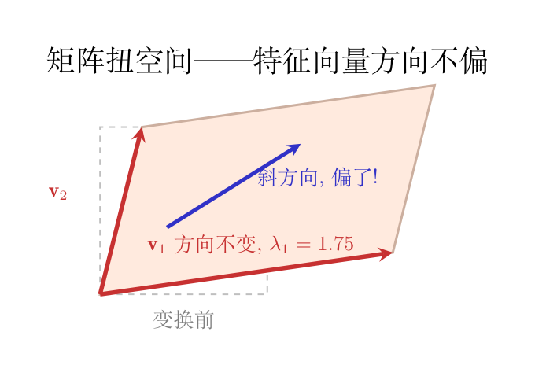

矩阵把整个空间扭了。但空间里有一些特殊的方向——扭完之后，它还在自己的方向上，只是被拉长（或压短、或翻转）了。
画面： 回到橡胶皮。你扯住对角往外拉。皮上画了一个箭头，如果这个箭头恰好沿着对角线——拉完之后它还在对角线上，只是变长了。如果这个箭头斜着画——拉完之后方向就偏了。
那个不偏的方向，就是特征向量 $\mathbf{v}$。被拉长（或压短）的倍数，就是特征值 $\lambda$。

读作：矩阵 $A$ 作用在 $\mathbf{v}$ 上，效果只是把 $\mathbf{v}$ 缩放 $\lambda$ 倍。方向不变，长度变。
回到空间变换的画面。一个 2×2 矩阵有两个特征值 $\lambda_1$ 和 $\lambda_2$——对应两个不扭的方向。
| 特征值 | 几何含义 | 例子 |
|---|---|---|
| $\lambda = 2$ | 这个方向被拉长到 2 倍 | 扯橡胶皮 |
| $\lambda = 0.5$ | 这个方向被压扁到一半 | 挤压 |
| $\lambda = 0$ | 这个方向被压成零——信息消失了 | 整张纸被压成一条线！ |
| $\lambda < 0$ | 不仅拉长，还翻转方向 | 箭头倒过来了 |
np.linalg.eig 帮我们算了，但它背后做了什么？我们来手动推导。
出发点是定义：
$$A\mathbf{v} = \lambda \mathbf{v}$$这行式子说：矩阵 $A$ 作用在向量 $\mathbf{v}$ 上（$A\mathbf{v}$，用 @ 算），结果等于这个向量单纯被拉长 $\lambda$ 倍（$\lambda\mathbf{v}$，用 * 算）。$\lambda$ 是一个普通数字（标量），$\mathbf{v}$ 是一个向量——$\lambda\mathbf{v}$ 就是把 $\mathbf{v}$ 的每个分量都乘 $\lambda$。
第一步：全移到左边。 和普通方程一样，把右边的东西搬到左边：
$$A\mathbf{v} - \lambda\mathbf{v} = \mathbf{0}$$$\mathbf{0}$ 是全零向量 $[0,0]$。左边两项都是向量（$A\mathbf{v}$ 是向量，$\lambda\mathbf{v}$ 也是向量），所以能相减。
第二步：引入单位矩阵 $I$。 现在想把 $\mathbf{v}$ 提出来，写成「某个矩阵 × $\mathbf{v} = \mathbf{0}$」的形式。但这里有个问题：$A$ 是矩阵，$\lambda$ 是标量——它们不是同类，不能直接写 $A - \lambda$（矩阵减数字没有意义，就像「苹果减橙子」）。
解决办法：把标量 $\lambda$ 变成矩阵。怎么变？乘上单位矩阵 $I$：
$$I = \begin{bmatrix} 1 & 0 \\ 0 & 1 \end{bmatrix}$$$I$ 的作用是「什么都不变」——对任何向量 $\mathbf{v}$，$I\mathbf{v} = \mathbf{v}$。就像数字 1：$1 \times 5 = 5$。那么 $\lambda I$ 就是一个矩阵：对角线上全是 $\lambda$，其余是 0。
现在可以把 $\lambda\mathbf{v}$ 改写成 $\lambda I \mathbf{v}$（因为 $I\mathbf{v} = \mathbf{v}$，所以 $\lambda I \mathbf{v} = \lambda \mathbf{v}$）：
$$A\mathbf{v} - \lambda I \mathbf{v} = \mathbf{0}$$现在两项都是「矩阵 × 向量」的形式了！把 $\mathbf{v}$ 提出来：
$$(A - \lambda I)\mathbf{v} = \mathbf{0}$$第三步：行列式为 0。 我们想要一个非零的 $\mathbf{v}$（全零向量 $[0,0]$ 永远满足方程，但那是废话，不是我们要找的特征向量）。
什么时候 $(A - \lambda I)\mathbf{v} = \mathbf{0}$ 有非零解？回看前面学的：行列式为 0 意味着矩阵把空间压扁了——有一整个方向被压成了零向量。所以：
$$\det(A - \lambda I) = 0$$这个方程叫特征方程。解出来的 $\lambda$ 就是特征值。
第四步：展开。 对 2×2 矩阵 $A = \begin{bmatrix} a & b \\ c & d \end{bmatrix}$：
$$A - \lambda I = \begin{bmatrix} a & b \\ c & d \end{bmatrix} - \begin{bmatrix} \lambda & 0 \\ 0 & \lambda \end{bmatrix} = \begin{bmatrix} a-\lambda & b \\ c & d-\lambda \end{bmatrix}$$行列式展开（用前面的 $ad-bc$ 公式，只是把对角线的 $a,d$ 换成 $a-\lambda, d-\lambda$）：
$$\det(A - \lambda I) = (a-\lambda)(d-\lambda) - bc$$ $$= ad - a\lambda - d\lambda + \lambda^2 - bc$$ $$= \lambda^2 - \underbrace{(a+d)}_{\text{迹}}\lambda + \underbrace{(ad-bc)}_{\text{行列式}} = 0$$这就是关于 $\lambda$ 的二次方程！$a+d$（对角线之和）叫迹（trace，记作 $\text{tr}(A)$），$ad-bc$ 就是行列式 $\det(A)$。
用二次方程求根公式解出 λ 的通解：
$$\lambda = \frac{\text{tr}(A) \pm \sqrt{\text{tr}(A)^2 - 4 \cdot \det(A)}}{2}$$代入 $\text{tr}(A) = 7$，$\det(A) = 10$：
$$\lambda = \frac{7 \pm \sqrt{7^2 - 4 \times 10}}{2} = \frac{7 \pm \sqrt{49 - 40}}{2} = \frac{7 \pm 3}{2}$$ $$\lambda_1 = \frac{7 + 3}{2} = 5, \quad \lambda_2 = \frac{7 - 3}{2} = 2$$对任意 2×2 矩阵，特征值就是两个数：$\frac{\text{tr} \pm \sqrt{\text{tr}^2 - 4\det}}{2}$。判别式 $\text{tr}^2 - 4\det$ 决定：正 → 两个实根，零 → 重根，负 → 复根。
# 00-05 第一步：手算特征值——用迹和行列式推出 λ₁ 和 λ₂
# 导入numpy，别名np，提供矩阵运算
import numpy as np
# np.array(嵌套列表) → 创建2×2二维数组（矩阵）
A = np.array([[4, 1],
# 外层列表每元素一行：A = [[4,1],[2,3]]
[2, 3]])
# 迹 = 对角线元素之和 → a+d = 4+3 = 7
# trace()返回矩阵对角线之和，整数7
trace = np.trace(A)
# f-string输出：迹 = 7
print(f"迹 = {trace}")
# 行列式 = ad−bc = 4×3 − 1×2 = 10
# linalg.det()计算行列式，浮点数10.0
det_A = np.linalg.det(A)
# :.0f = 保留0位小数，输出整数形式 "10"
print(f"行列式 = {det_A:.0f}")
# 特征方程: λ² − tr(A)·λ + det(A) = 0
# 即 λ² − 7λ + 10 = 0
# 二次方程求根公式: λ = (tr ± √(tr²−4det)) / 2
# 导入math模块，使用sqrt开方函数
import math
# √(b²−4ac) = √(49−40) = √9 = 3.0
discriminant = math.sqrt(7**2 - 4*10)
# λ₁ = (7+3)/2 = 5.0，第一个特征值
lambda1 = (7 + discriminant) / 2
# λ₂ = (7−3)/2 = 2.0，第二个特征值
lambda2 = (7 - discriminant) / 2
# 输出：λ₁ = 5.0, λ₂ = 2.0
print(f"λ₁ = {lambda1}, λ₂ = {lambda2}")
<